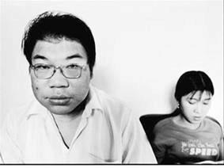

Tiền Phong - Nhan khắc khoải bởi biết đâu anh chỉ là nơi tạm trú của tôi? Anh ưa yên ổn, chí thú, hiền lành. Anh không thích nghe tôi kể về những sóng gió trong đời tôi, trong tâm hồn. Anh chỉ gần gũi thân thiết với tôi trong hiện tại.
Nhan từ bệnh viện về, đã trả hết viện phí cho tôi. Anh nghỉ việc chiều nay. Nhan nói, ông chủ khó tính lắm, thời gian mẹ anh nằm viện, anh không chịu tăng ca thêm giờ, chủ đã dọa đuổi.
Nhan cao lớn, chu đáo, từ ngày đầu đã coi tôi như người thân. Buổi tối, tôi đi học tiếng Hoa miễn phí ở trường tiểu học cạnh nhà. Lớp xôn xao như một vườn trẻ lớn, con cái cô dâu Việt Nam đánh nhau, khóc lu loa, hoặc chạy huỳnh huỵch.
Tôi lại nhớ đến con tôi.
Tóc tôi dài ra theo nỗi nhớ, những đêm rối bù.
Tôi theo Nhan Bách Bân đi làm xưởng giặt là ở gần chỗ công ty anh. Công việc hơi vất vả, lương ban đầu chỉ được mười tám nghìn Đài tệ. Hai người hai lương chỉ đủ nuôi bà mẹ già và hai đứa con chồng.
Con trai Nhan học tiểu học, béo trùng trục và độc lập, không phiền tôi. Nhưng mỗi lúc làm cơm trong bếp, trong hơi nước sôi buổi tối dưới ánh đèn, tôi luôn tự hỏi, sao mình bỏ con mình để đi chăm con người? Có đáng không?
Có đáng không, cho dù là giữa tình yêu?
Những câu hỏi dắt tôi ra đường, giữa khuya, ngồi im lặng dưới ngọn đèn đường thẫn thờ.
Một đêm, Nhan đến ngồi đầu kia chiếc ghế, cũng trầm ngâm, rồi sát lại ôm vai tôi nói, anh yêu em, em biết vì sao không?
Lắc đầu. Thôi về đi em ạ. Dắt tay tôi.
Chúng tôi yêu nhau giữa những tâm trạng khắc khoải, không toàn vẹn.
Nhan khắc khoải bởi biết đâu anh chỉ là nơi tạm trú của tôi? Anh ưa yên ổn, chí thú, hiền lành. Anh không thích nghe tôi kể về những sóng gió trong đời tôi, trong tâm hồn. Anh chỉ gần gũi thân thiết với tôi trong hiện tại. Anh lạ lẫm với tôi giằng xé giữa quá khứ và tương lai.
Gần đây, đến lượt Nhan bỏ tôi ra ngồi dưới ngọn đèn đường. Những buổi tối không thấy Nhan đâu, tôi bật kênh Yoyo cho lũ trẻ xem rồi cũng lẻn khỏi nhà tìm đến bên người đàn ông tôi yêu, dựa vai anh. Chúng tôi ngồi canh cho ánh sáng thành phố Đài Trung. Cảm ơn thị trưởng Đài Trung đã không tắt ngọn đèn trước công viên của hai chúng tôi. Một ngọn đèn nhỏ nhoi giữa hàng tỷ watt năng lượng nguyên tử tràn ngập đảo, lại quan trọng với chúng tôi như thế này. Nó chứng kiến lúc chúng tôi lặng im.
Bình yên là một thứ hạnh phúc khó bày tỏ, khó chứng kiến.
Thời gian ấy ngắn tới mức không kịp nhớ, tôi đã bị đẩy vào cuộc đời sóng gió. Hoặc đời tôi sóng gió tới mức nhận ra, ngọn đèn gia đình sum vầy chỉ sáng lên trong mong ước mà thôi. Còn tôi, số phận tôi gắn với những ngọn đèn đường.
Nhan bị đuổi việc.
Thì ra, những ngày vào viện chăm mẹ ốm, quen tôi, những ngày đón đưa tôi đi làm, anh đã bị cảnh cáo nhiều lần. Chuyến xe ân cần rước tôi đi làm mỗi sáng, đổi lại là quyết định bị đuổi việc. Chân kỹ thuật viên của anh có nhiều sinh viên vừa tốt nghiệp các trường kỹ thuật của Đài Loan lấp vào, lương khởi điểm thấp hơn lương Nhan, nhưng người làm mới luôn vui vẻ phấn khởi và trẻ trung hơn.
Nhan về nhà ngồi thở dài. Bỗng dưng tôi trở thành tai họa cho cả nhà. Nhưng thê thảm hơn khi bỗng dưng, tôi trở thành người gánh vác cả gia đình năm người.
Tôi mập dần lên, khôi phục lại sức khỏe và sự vui vẻ, nhưng ngược lại với tôi là cảnh nhà Nhan Bách Bân sa sút trông thấy. Bà mẹ lại nằm quay mặt vào tường, tới ngày thứ tư, chúng tôi buộc phải đưa bà vào viện. Vào nằm đúng gian phòng chúng tôi đã quen nhau.
Tôi đứng ở sân bệnh viện, buồn rầu cầm tay Nhan.
- Em yêu anh. Nhưng em phải đi thôi.
Lần đầu tiên tôi thấy Nhan khóc, Nhan nắm tay tôi ngoảnh mặt đi. Tôi rất muốn làm một điều gì đó để an ủi người tôi yêu. Nhưng giá như làm được gì thì tôi đã làm trong suốt những ngày qua, chứ không chờ tới giây phút chia tay.
- Chúng ta có ba đứa con trai. Chúng ta có nhiều gánh nặng, có nhiều mơ ước. Em biết rằng cuộc sống khó khăn, em không muốn cuộc sống của chúng ta ngày càng chật vật đi. Vì thế, em muốn anh sẽ luôn thế này, em cũng sẽ nhớ anh.
Nhan nói:
- Ở đây bắt đầu, ở đây cũng chia tay.
Tôi đi một mình ra cổng bệnh viện, về thu xếp đồ đạc. Tôi muốn kết thúc trong êm dịu, không muốn kết thúc như thể muốn giết nhau, như với người yêu đầu, với người chồng Đài Loan.
Tháng mười sắp hết, con tôi sắp tròn sáu tháng tuổi. Tôi đón nhận mùa đông sắp tới, vui mừng nghĩ nơi con tôi sẽ không biết giá lạnh là gì. Mặt trời Sài Gòn luôn chói.
Đau đớn như thể nửa cuộc đời của tôi đã chôn nốt tại đây, bỏ tôi ở lại với Nhan.
Tôi linh cảm thấy đó là cơ hội hạnh phúc cuối cùng của đời tôi.
Phủ Li cách thành phố Đài Trung một tiếng xe bus, thị trấn nhỏ, những rặng phong mùa thu lá đổi màu dần dà. Ở đây người đi lại thong dong hơn, xe cộ ít ồn ào. Bên ngoài viện dưỡng lão, những con đường hiền lành đón tôi. Ngoái lại thấy sau lưng đầy lá cây xôn xao.
"Tôi không buôn người, tôi chỉ buôn chính mình. Tôi chỉ bán mình cho sự lương thiện. Nếu đi làm nơi khác, lương cao hơn nhưng tiền thuê nhà, ăn ba bữa cũng hết nhiều. Tính đi tính lại, tôi chấp nhận kéo đồ về Lâm Viên. "
Tôi kéo túi đồ vào quán Việt Nam trước cổng trạm xe bus Hohsin. Những người ngồi trong quán quay cả ra nhìn. Có một đôi vợ chồng ngồi ăn với đứa con, một đám đang ngồi bôi kem dưỡng da tán chuyện cũng ngừng cả lại. Tôi kéo ghế ngồi, gọi một bát phở.
Có lẽ giờ này Nhan Bách Bân sắp tan sở. Anh sẽ vào viện thăm mẹ trước khi đi đón con, đi chợ, về lụi hụi nấu ăn. Nghĩ đến người đàn ông ấy, tôi trào nước mắt.
Chắc chắn bát phở giữa đất Đài Loan khó ăn không phải vì nhiều lá húng, loại hôi hôi dùng để kẹp với thịt chó, ở quê mẹ tôi xưa.
Ăn xong tôi hỏi chị chủ quán, chỗ chị có cần người làm công không?

Ai cần người làm công có trình độ đại học? Họ chỉ cần sức người.
Ngay cả mang về làm vợ đi chăng nữa. Họ chỉ cần đàn bà.
Tôi là đàn bà đây, tôi có sức khỏe, tôi cần một chỗ làm việc, trước khi cần một chỗ ngả lưng, chưa dám nghĩ tới chỗ đứng chân. Trong xã hội, chấp nhận mình là ai, thật khó.
Đến tối, sau khi được chị em trong quán gọi điện hỏi giúp, giới thiệu vài nơi, cuối cùng tôi chấp nhận về quán Lâm Viên. Chủ quán nói chỗ rộng, tối có thể lên tầng hai ngủ. Ăn tại quán luôn. Lương tháng mười lăm nghìn.
Mười lăm nghìn tệ tức là chưa bằng một nửa tiền của cô dâu Việt, tay cầm túi rác phân loại, buổi chiều gọi một cú điện thoại, rồi hẹn cô ô sin mới, nói, sáng mai mang quần áo vẫy taxi tới địa chỉ này, tao giúp mày trốn chủ.
Tôi không buôn người, tôi chỉ buôn chính mình. Tôi chỉ bán mình cho sự lương thiện. Nếu đi làm nơi khác, lương cao hơn nhưng tiền thuê nhà, ăn ba bữa cũng hết nhiều. Tính đi tính lại, tôi chấp nhận kéo đồ về Lâm Viên. Ông chủ họ Trương, bốn mươi tư tuổi, bằng tuổi chồng tôi.
Tôi xếp đồ lên tầng hai, phòng nhỏ bên cạnh kho chất những bao những tải hàng gì đó. Ngồi xếp những vật dụng ít ỏi vào tủ gỗ, sạc điện chiếc điện thoại mà pin đã cạn tới vạch cuối cùng. Tôi cầm trên tay tấm ảnh chụp kỷ niệm ngày tốt nghiệp đại học, tôi và bạn bè trong mũ áo cử nhân cười vui sướng với cuộc đời mới phía trước.
Đêm đầu tiên nhớ Nhan kinh khủng. Cả thị trấn hàng vạn máy lạnh chạy rù rì.
Khoảng mười một giờ đêm, vừa thoáng chợp mắt, tôi đã bị đè chặt xuống giường bởi sức nặng cả thân hình cao lớn của ông chủ. Bóp cánh tay tôi đau điếng, người chủ mới hung bạo giật áo ngủ tôi xuống tuột khỏi vai, chà miết bằng tay, bằng mặt, bằng răng, bằng những móng sắc như rạch da thịt khiến tôi thét lên.
Hốt hoảng kinh hãi, tôi cố gắng bật dậy che ngực nhưng không thể cử động nổi. Cả thân thể bị đè xuống giường, cảm nhận được cả lớp vải đệm thô dưới lưng cũng đồng lõa. Nó siết lấy tôi, giữ thân thể tôi lại, từng sợi vải lạnh lùng miết lên phần lưng trần.
Ông chủ bịt miệng, rồi bóp mồm tôi. Đôi môi dầy hôi mùi trầu làm tôi đơ dại vì ghê tởm, như bị một cú giáng ngất đi.
Cảm giác tan vỡ, bất lực, nhục nhã tràn ngập đầu óc, tôi thổn thức xuôi tay, để mặc cho người đàn ông tìm kiếm trên thân thể tôi những gì ông ta muốn...
Mười hai giờ. Cái điện thoại no pin sáng lên báo hiệu. Tôi co người quay sang cầm cái miếng kim loại nhỏ nhấp nháy tín hiệu, nhìn nó chòng chọc, không hiểu đây là cái gì. Nó dùng để làm gì, nó đang sáng lên vì cái gì.
Tôi ở Đài Loan hai năm, tôi cứ tưởng trầu cau là một thứ dấu xăm phân loại thứ bậc trong xã hội Đài Loan. Ăn trầu là được quyền tàn nhẫn.